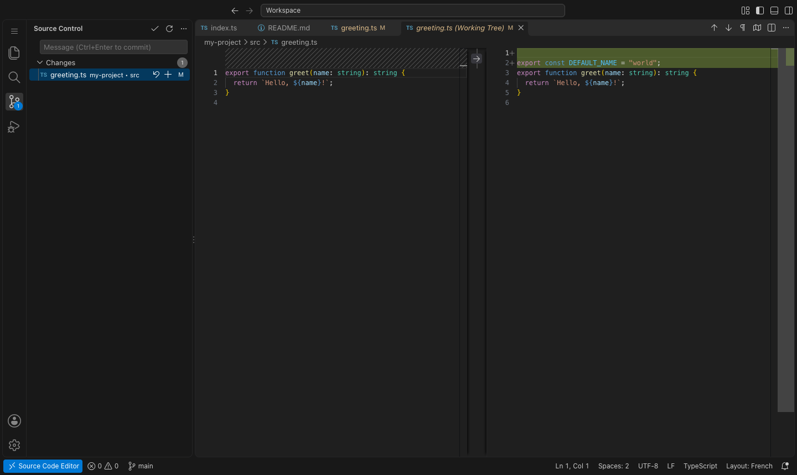
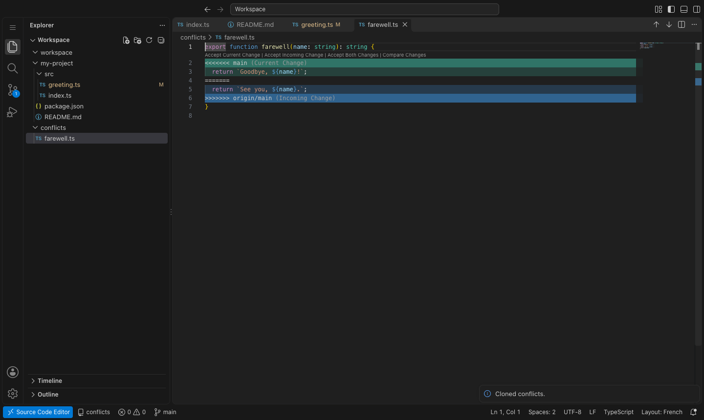

// screenshots
The editor you know, with Git that works without a terminal.


// features
Built for developers who want an editor wherever a browser is. No account, no tracking.
Explorer, search, source control, command palette, settings editor, split editors and themes: the same interface, in a tab or in a standalone window.
Open a local folder on Chromium, import one on Firefox, or start from sample files. Your work is stored in the browser and is still there after a reload.
Clone a public or private repository from GitHub, GitLab or any Git server over HTTPS, straight into the browser.
Stage, commit, create and switch branches, push, pull and fetch, with diffs and the status of every file next to its name.
Pull merges what others pushed. Conflicts get their own group, and you accept the current change, the incoming one or both without leaving the editor.
Sign in with an access token. It stays in this browser, is never synchronized, and you can forget it at any time.
Syntax highlighting for TypeScript, JavaScript, JSON, HTML, CSS, Python, Rust, Go and more, plus a Markdown preview with Mermaid diagrams.
The interface speaks English, French, German, Spanish, Italian, Portuguese, Czech, Polish, Russian, Turkish, Japanese, Korean and Chinese (simplified and traditional).
// how it works
Three steps, no setup.
Click the toolbar button or press Alt+Shift+E. On a GitHub or GitLab repository page, the
context menu opens that repository directly.
Open or import a folder, or choose Git: Clone Repository and paste an address. The menu at the bottom left gathers these commands.
Change files, review the diff in Source Control, commit, and push the branch back to the remote.
// follow the project
Free. Open source. No account needed. Everything stays in your browser.